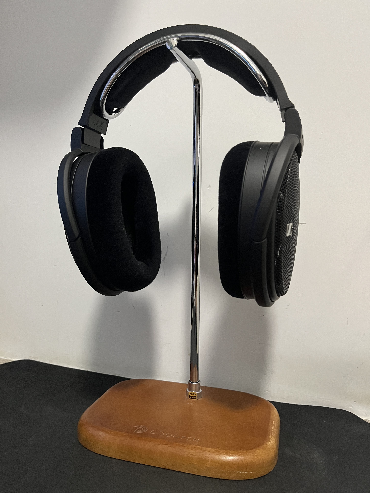

Sennheiser® HD 660s

The Sennheiser® HD 660 S are good open-back critical listening headphones. They have a good audio reproduction and are comfortable enough for long listening sessions. However, they are quite a bit tighter than other Sennheiser headphones we've tested, like the Sennheiser HD 650. They won’t be great for any other use as their open design doesn’t block any noise and leaks a lot, so they're best used in a quiet listening room where you can really benefit from their sound quality.
https://www.sennheiser-hearing.com/en-HK/p/hd-660s/